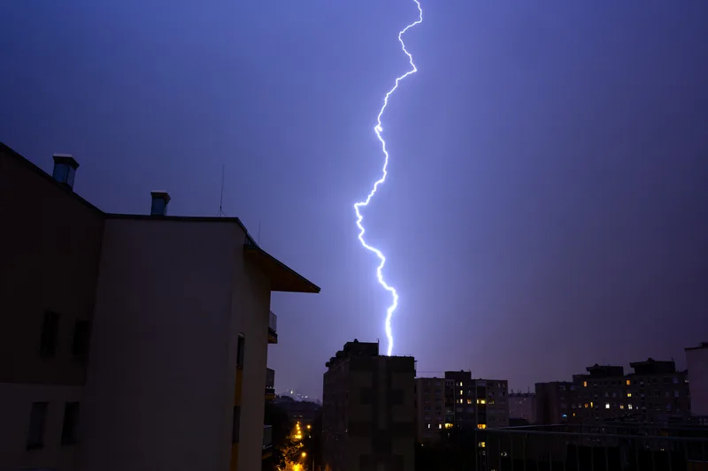
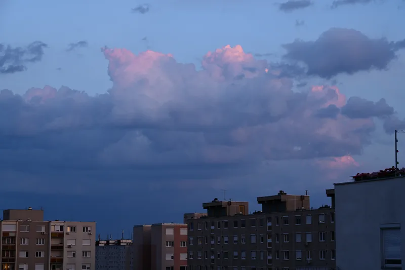
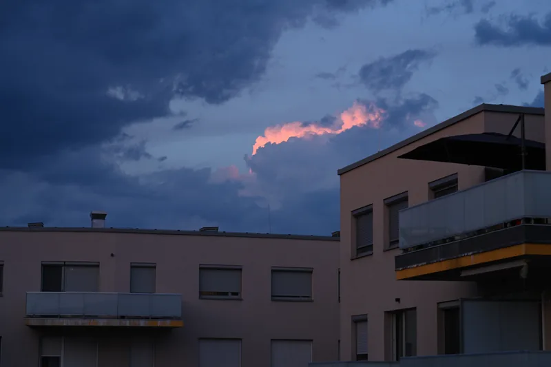
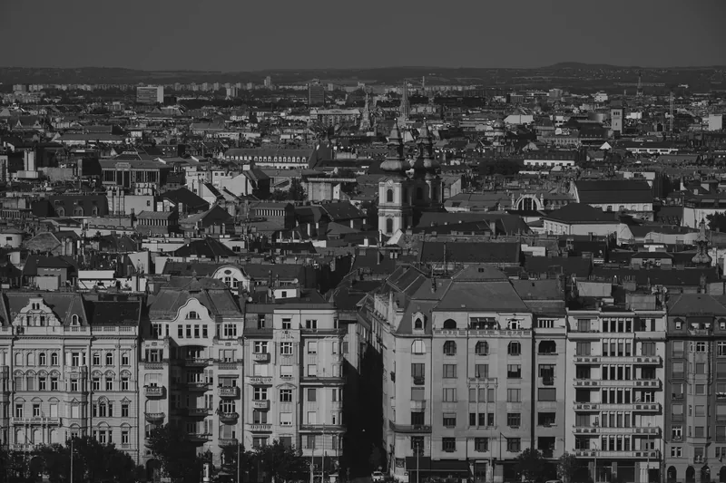
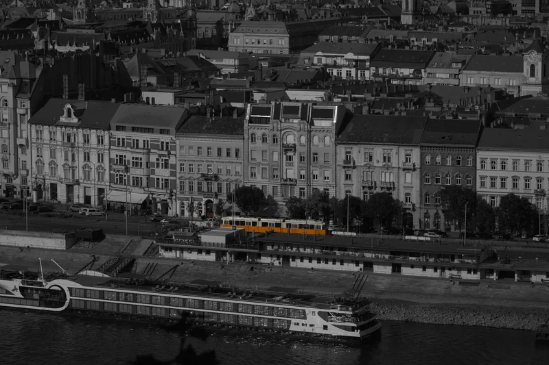
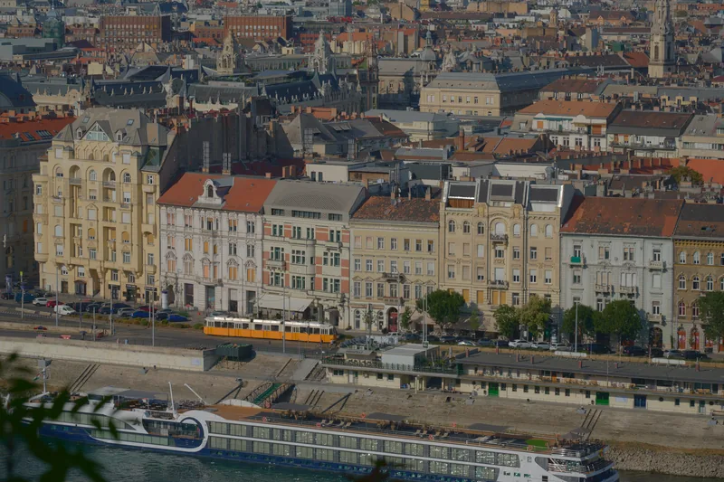
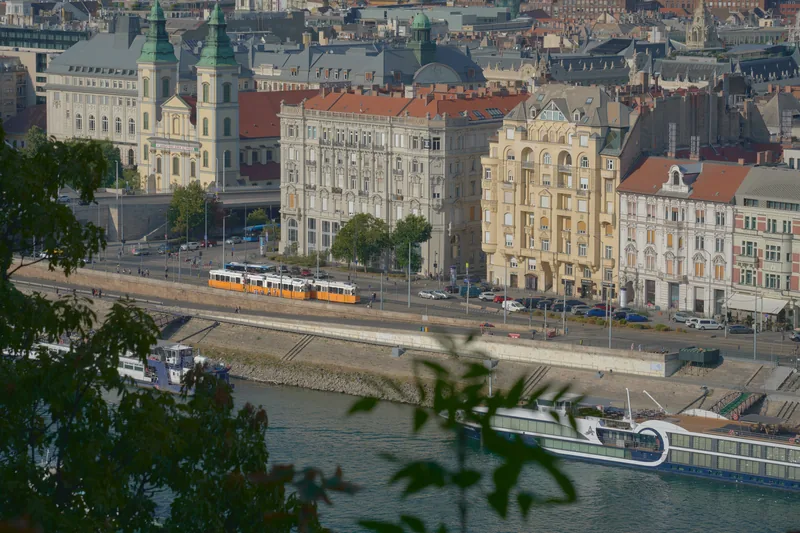
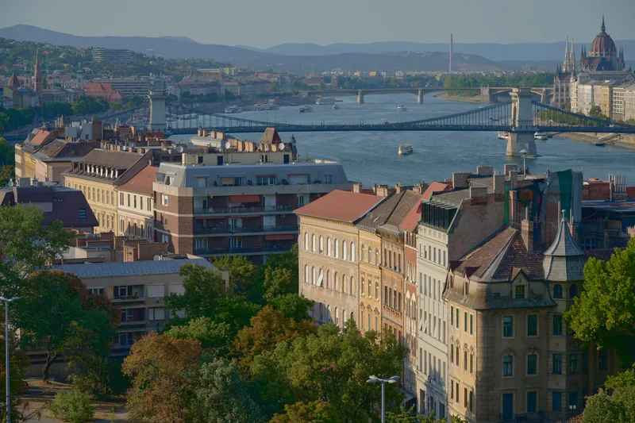
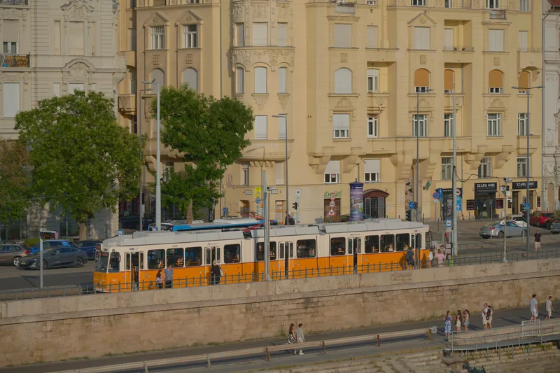
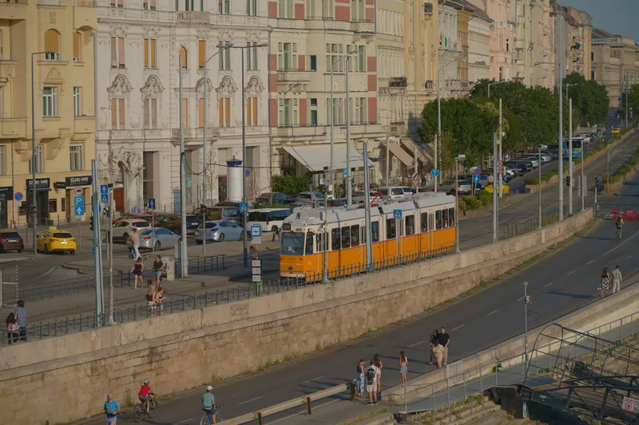

作品集 / budapest
布达佩斯。
城市的天空、河岸与驶过的电车。
← 首页11 PHOTOGRAPHS


拍摄参数未保留 ISO 64 · 1/13 秒 · f/8 · 120 mm


ISO 64 · 1/6 秒 · f/8 · 71 mm

ISO 64 · 1/6 秒 · f/8 · 86 mm

ISO 64 · 1/400 秒 · f/11 · 120 mm

ISO 64 · 1/400 秒 · f/11 · 120 mm

ISO 64 · 1/320 秒 · f/11 · 120 mm

ISO 64 · 1/200 秒 · f/11 · 120 mm

ISO 64 · 1/200 秒 · f/8 · 99 mm

ISO 64 · 1/640 秒 · f/6.3 · 120 mm

ISO 64 · 1/640 秒 · f/6.3 · 120 mm